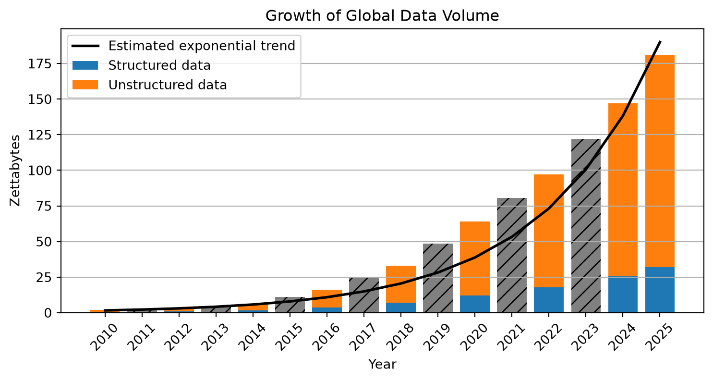
Prof. Dr. Gerit Wagner
(2026-03-23)

| Unit | Equivalent | Approximate meaning |
|---|---|---|
| Gigabyte (GB) | A HD movie file or a few hundred photos | |
| Terabyte (TB) | 1,000 GB | Storage of a modern laptop or external drive |
| Petabyte (PB) | 1,000 TB | Data of a large company or several large data centers |
| Exabyte (EB) | 1,000 PB | Roughly the yearly internet traffic of a small country |
| Zettabyte (ZB) | 1,000 EB | ≈ 1 trillion gigabytes; global data creation scale |
Enterprise and transactional data
Enterprise systems such as ERP, CRM, and supply chain platforms generate large volumes of structured data through everyday business transactions.
eCommerce
Every search, click, purchase, and review creates behavioral and transactional data used for recommendations and personalized marketing.
Social media and user-generated content
Platforms such as TikTok, YouTube, and Instagram generate enormous data volumes through uploads, interactions, and live streaming.
IoT and smart devices
Connected devices—from wearables to industrial sensors—continuously produce real-time data across interconnected systems.
Digital transactions
Online banking, mobile payments, and blockchain systems generate detailed financial records for transactions and security monitoring.
AI-generated data
Machine learning and generative AI create large datasets during training and operation, further accelerating global data growth.
The rapid acceleration of computing power—driven by advances in hardware, cloud infrastructure, and parallel processing—has enabled modern analytics and machine learning to scale to massive datasets.
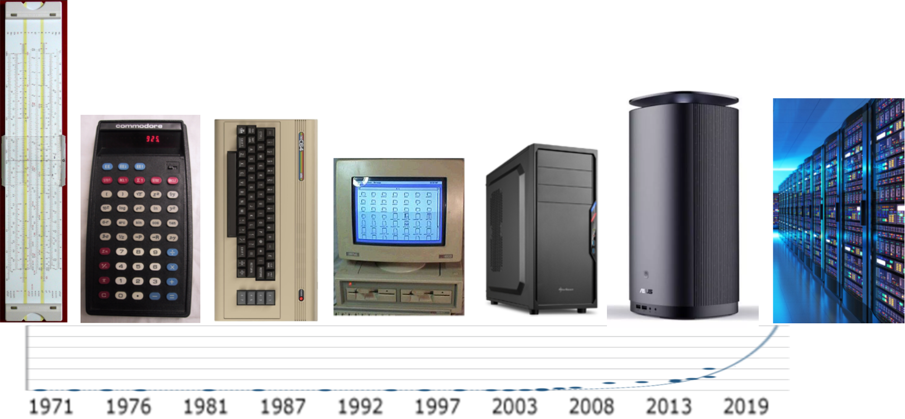
The growth of modern analytics is enabled by changing strategies for increasing computing power.
| Era | Main strategy | Explanation |
|---|---|---|
| 1970s–2000s (*) | Moore’s Law & miniaturization | Smaller transistors → more components per chip → faster processors |
| 2005–today | Parallel computing | Performance increases by using multiple processors simultaneously |
| 2010s–today | Specialized hardware | Chips optimized for specific workloads (GPUs, TPUs, AI accelerators) |
| Emerging | New computing paradigms | Alternative computing models such as quantum computing |
An algorithm is a step-by-step procedure for performing a computation and thereby solving a problem.
Algorithms determine how efficiently computers can process data and solve tasks.
Examples:
Learning note
No need to memorize everything.
Be able to give a few illustrative examples.
This also applies to the data production areas.
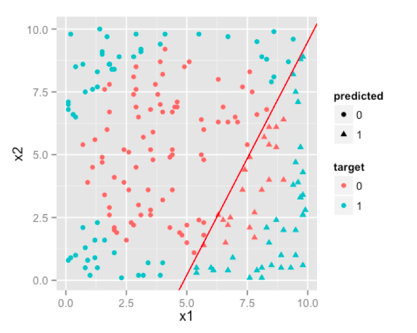
Traditional Regression
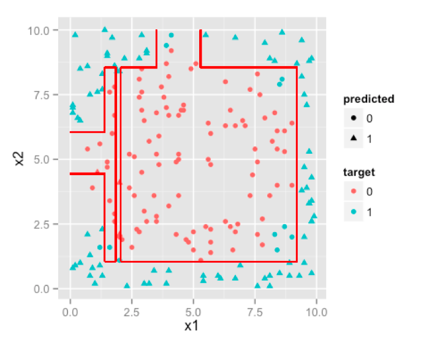
Decision Tree
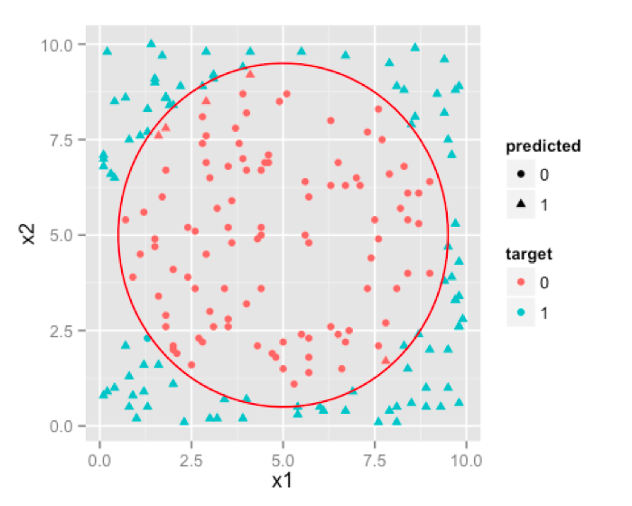
Neural Network
Recent breakthroughs in artificial intelligence (AI)1 show how new algorithms can rapidly surpass human performance. DeepMind provides good examples.
AlphaGo (2016)
Go was long considered too complex for computers due to the enormous search space.
AlphaFold (2020–2022)
Predicting protein folding had been a major unsolved problem in biology for decades.
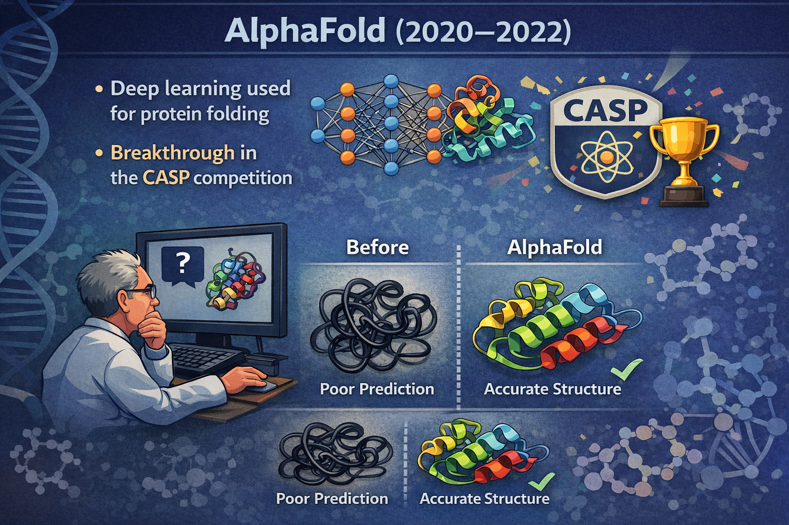
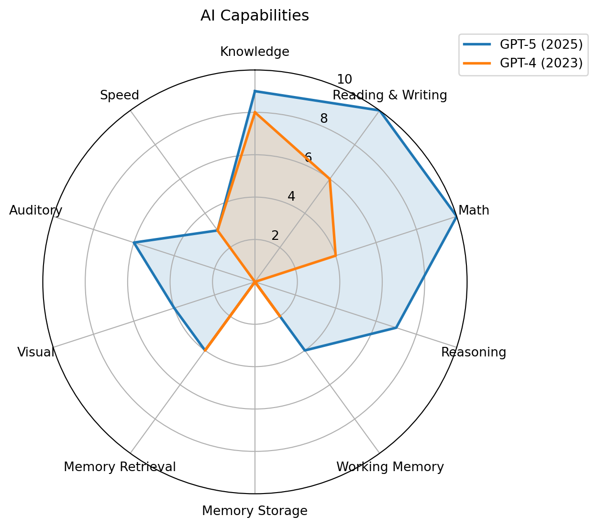
AI progress often occurs through algorithmic breakthroughs, enabling machines to outperform humans in increasingly complex tasks.
Recent studies suggest that AI creates a “jagged frontier.” (Dell’Acqua et al., 2023), i.e., some tasks are well suited to AI, while others that appear similar remain outside its capabilities.
Descriptive analytics: What happened?
Predictive analytics: What will happen?
Prescriptive analytics: What should we do?
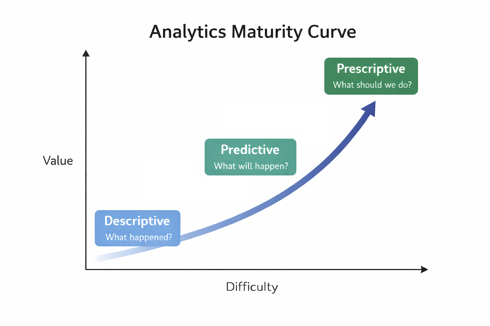
| What happened? (descriptive ) | What will happen? (predictive analytics) | What should I do? (prescriptive analytics) |
|---|---|---|
| How many widgets did I sell last month? | How many widgets will I sell next month? | Order 5,000 units of Component Z to support widget sales for next month. |
| What were sales by zip code for Christmas last year? | What will be sales by zip code over this Christmas season? | Hire Y new sales reps by these zip codes to handle projected Christmas sales. |
| How many of Product X were returned last month? | How many of Product X will be returned next month? | Set aside $125K in financial reserve to cover Product X returns. |
| What were company revenues and profits for the past quarter? | What are projected company revenues and profits for next quarter? | Sell the following product mix to achieve quarterly revenue and margin goals. |
| How many employees did I hire last year? | How many employees will I need to hire next year? | Increase hiring pipeline by 35% to achieve hiring goals. |


Based on more than 300 million data records per week, Otto generates over one billion forecasts annually on the expected sales of individual products in the coming days and weeks. These forecasts are used to optimize inventory decisions, determining how many units of each product should be stocked or reordered across warehouses. By systematically adjusting inventory levels based on these data-driven recommendations, Otto is able to reduce its overall inventories by up to 30% on average while maintaining product availability.

There is a a broad repertoire of models and methods from multiple disciplines, each with its own assumptions, data preparation steps, and modeling processes. While these fields often focus on methodological development, business analytics emphasizes applying these approaches to support understanding and decision-making in organizational contexts.
| Discipline | Model culture | Typical models |
|---|---|---|
| Statistics | Probabilistic inference | Regression, GLM, Bayesian |
| Econometrics | Causal modeling | IV, panel models |
| Computer Science | Algorithmic learning | Trees, SVM, NN |
| Operations Research | Optimization | Linear programming, Non-linear optimization |
| Management Science | Decision modeling | Stochastic optimization |
| Complex Systems | Simulation | Agent-Based/Discrete Event Simulation |
CRISP-DM is a widely used framework that structures data mining and analytics projects (Wirth & Hipp, 2000).
We structure the course along the CRISP-DM analytics lifecycle:
Analytics is not a linear pipeline. We constantly move between business problems, data, modeling, and evaluation.
Options
Why this setup?
We use Jupyter Notebooks and Python because
Jupyter Notebooks combine context, code, output, and implications in one interactive document.
Cells
Output
Running a code cell produces results directly below it (text, tables, charts, etc.).
Execution environment
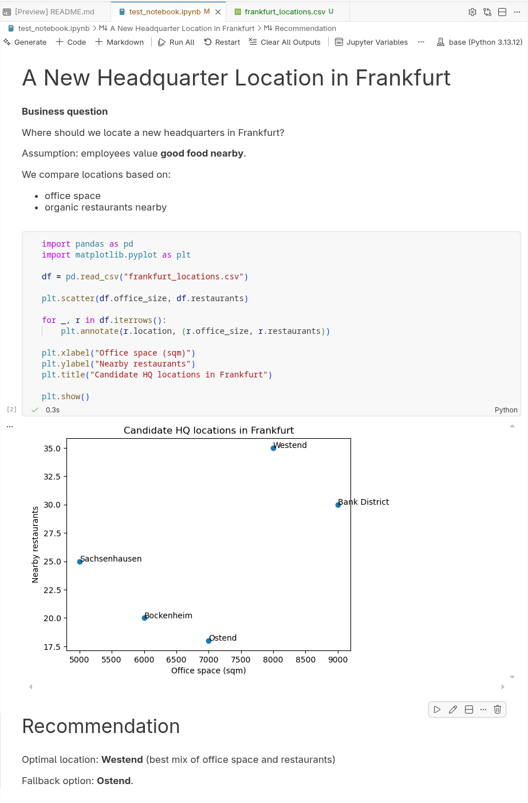
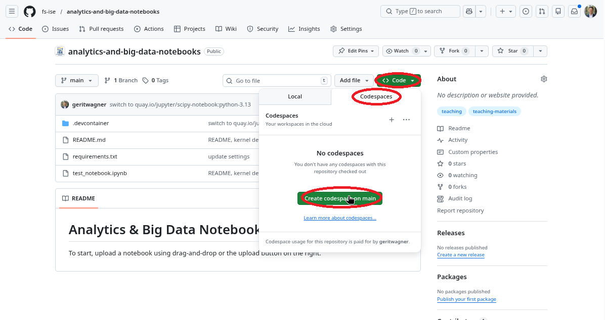
Take 5–10 minutes
Stretch, grab a coffee, or chat with others.
We’ll continue shortly
Each section is 30 min. Work in pairs of two.
Read the Competing on Analytics paper by Davenport (2006). Prepare to discuss the following questions:
What does it mean for a company to “compete on analytics”?
How is this different from simply using data or reports in decision making?
What organizational capabilities are required to compete on analytics?
Consider aspects such as leadership, culture, people, and technology.
Which companies or industries today seem to compete on analytics?
Give examples and explain how analytics creates their competitive advantage.
Find a dataset on https://www.kaggle.com/datasets and a corresponding business problem you could address with the data.
Create a notebook report.ipynb and draft an analysis structure based on CRISP-DM:
Then:
The goal is not to complete the analysis, but to begin working with the data.
Modes
EnterEscNavigating cells
↑ / ↓a (above) / b (below)Cell types
myRun cells
Ctrl + Enter or Shift + Enter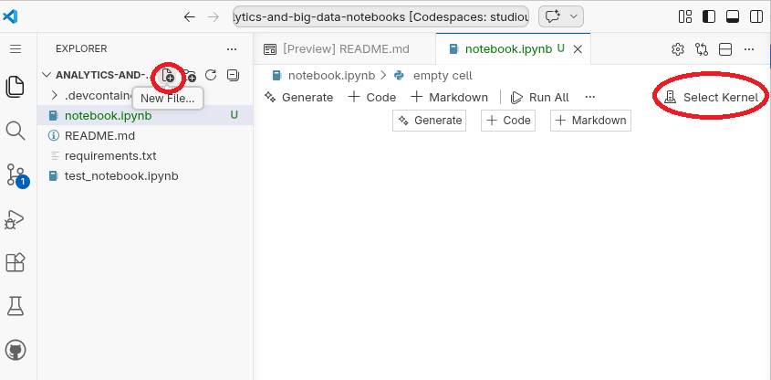
Steps to get started:
notebook.ipynb/opt/conda/bin/python.Stopping and resuming a Codespace
Deleting a Codespace
Recommendation